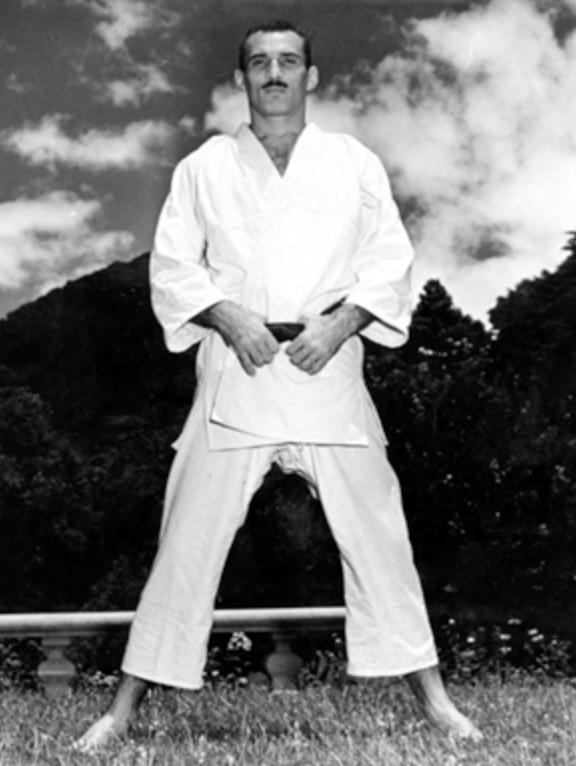

Hélio Gracie wearing the traditional Brazilian Jiu-Jitsu uniform
On The Frontiers of Fighting
- Hélio Gracie was born October 1, 1913 in Belem, Brazil to Gastão Gracie who operated the American Circus. The circus brought in many traveling showmen and entertainers.
Wrestlers of various type would commonly travel around and do challenges at various circuses. One such traveller was Mitsuyo Maeda - coming all the from Japan.
Maeda was one of the students of Jigoro Kano - the founder of Judo. Maeda went on to train some of the Gracie family in his style of Judo.
- Hélio began martials arts at the age of 16 beginning with Judo. Brazil had sizable Japanese expat population. At the time, Judo was in its infancy and was often called "Jiu-Jitsu".
Judo is a martial art that focuses on wrestling techniques - throws, takedowns, pins and submissions - while wearing the Kimono or Gi jacket.
Hélio also was exposed to other styles of grappling and many different teachers, but eventually adopted the Maeda style of Judo which had a strong emphasis on ground grappling.
-
The experiments with different styles of grappling, led Hélio and the Gracie family to develop their own unique style which later would be called Brazilian Jiu Jitsu or Gracie Jiu Jitsu.
With their love of martial arts and experience in show business, the Gracie family did many chellenge matches or fights.
These challenege matches would pit the Gracie style versus fighter of many different kinds. Hélio fought professionally for the first time at the age of 18 against a boxer, quickly submitting him.
-
The challenge matches would contain many different rules sets, but often mixed rules where striking and wrestling were permitted. This style of mixed fighting became known as Vale Tudo.
Valu Tudo fights proved a great opportunity for the Gracie family to hone their skills and learn what works and what does not in real fighting.
Eventually styles like Vale Tudo and Shooto (from Japan) would give birth to the modern sport of Mixed Martial Arts. Members of the Gracie family were involved in forming The Ultimate Fighting Championship.
-
Hélio Gracie died on January 29, 2009. He left behind a legacy as a martial arts pioneer which would shape the future of martials arts and combat sports.
The Gracie family's willingness to go anywhere and challenge anyone has turned the sports of Mixed Martial Arts and Brazilian Jiu Jitsu to go from obscurity to global phenomenons.